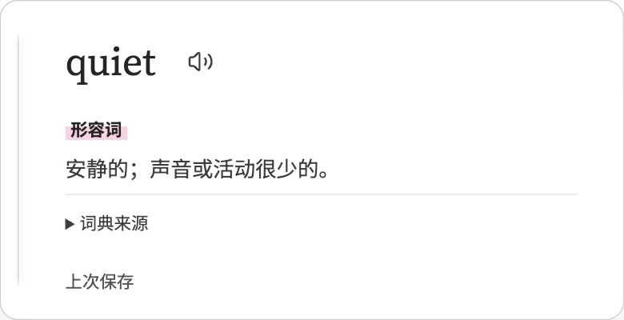
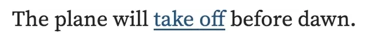

亲手读一段。
打开示例材料，点一个英文词，看看它在原句里的意思。
公开下载为 v0.4.5，提供 macOS、Windows、Android 安装包。在线工作区体验较新的阅读界面，尚无公开 iPhone 安装包。


打开示例材料，点一个英文词，看看它在原句里的意思。
公开下载为 v0.4.5，提供 macOS、Windows、Android 安装包。在线工作区体验较新的阅读界面，尚无公开 iPhone 安装包。